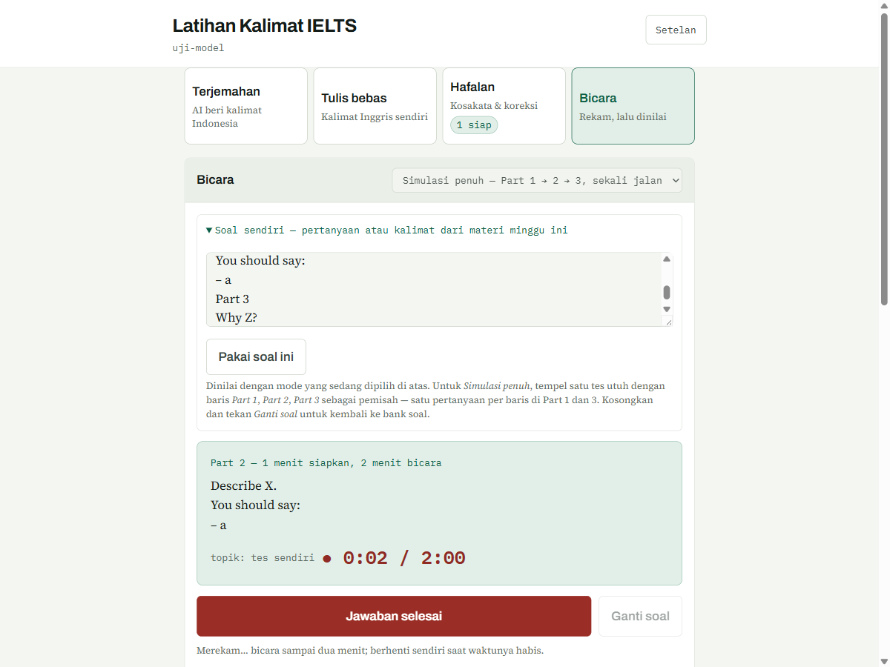
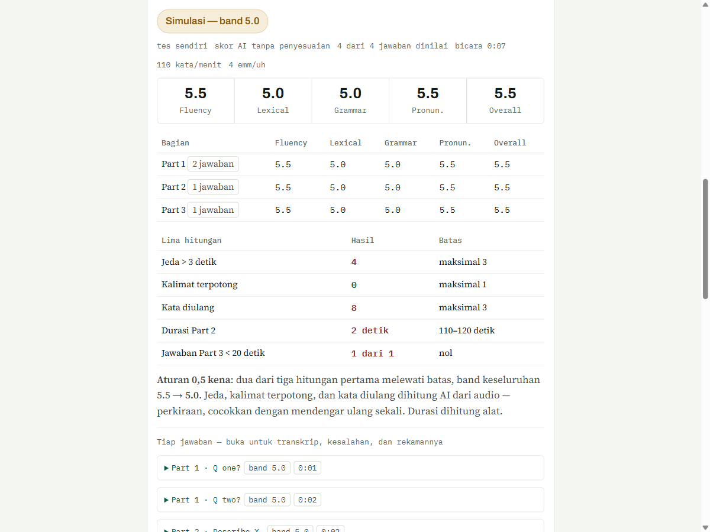

Learning application Aplikasi belajar · 2025–2026
IELTS 24 Prep Platform
Speaking practice with browser audio recording and feedback on delivery timing. Latihan speaking dengan perekaman audio di browser dan umpan balik tempo berbicara.
My role: Developer · Independent project Peran saya: Developer · Proyek mandiri

Real screenshot of the app (sample session). Tangkapan layar asli aplikasi (sesi contoh). · Open full size Buka ukuran penuh
The problem Masalah
Speaking practice needs more than a question prompt: learners also need to understand their pace and pauses. Latihan speaking membutuhkan lebih dari pertanyaan: peserta juga perlu memahami tempo dan jeda bicara.
What I built Yang saya bangun
I built a speaking-practice suite with in-browser recording, words-per-minute feedback, and pause analysis. A practice rubric covers fluency, vocabulary, grammar, and pronunciation. Saya membangun aplikasi latihan speaking dengan perekaman di browser, umpan balik kata per menit, dan analisis jeda. Rubrik latihan mencakup kelancaran, kosakata, tata bahasa, dan pelafalan.
- In-browser audio recording Perekaman audio di browser
- Words-per-minute and pause feedback Umpan balik kata per menit dan jeda
- Practice feedback based on publicly described band criteria Umpan balik latihan berdasarkan kriteria band yang dipublikasikan
Scope and limitations Lingkup dan batasan
Practice feedback is not an official IELTS score or a guaranteed exam outcome. Umpan balik latihan bukan skor IELTS resmi atau jaminan hasil ujian.

Practice results/rubric view (sample data). Tampilan hasil/rubrik latihan (data contoh).
Want to discuss the implementation? Ingin membahas implementasinya?
Get in touch to discuss the workflow, technical choices, and my contribution. Hubungi saya untuk membahas alur kerja, pilihan teknis, dan kontribusi saya.
Email me Kirim email